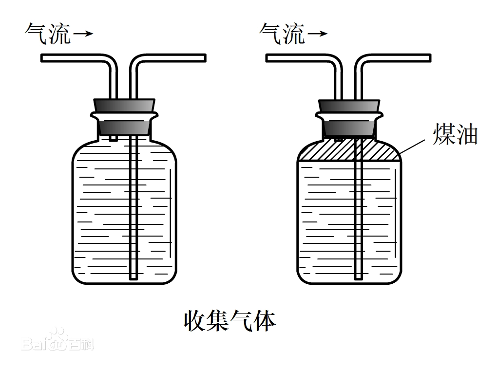
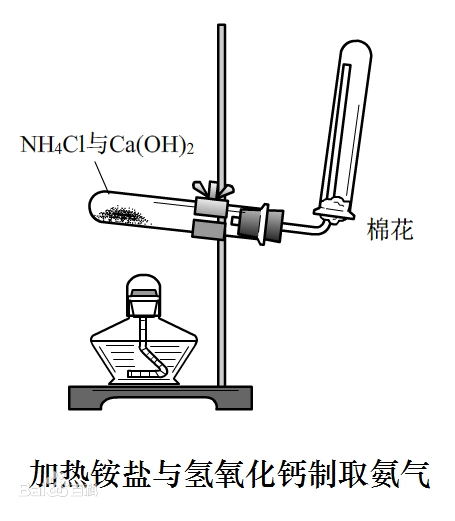

8.钠及其化合物
判断：用铂丝蘸取少量某溶液进行焰色反应，火焰呈黄色，则该溶液一定是钠盐溶液。 错误。例如
判断：碳酸钠可以用来制造玻璃。 正确。
判断：实验室可用 与 反应制取少量 正确。
判断：使用 溶液比使用洗涤剂清洗餐具更环保。 正确。
判断：生活中常用苏打作发酵粉。 错误，小苏打。
向酚酞溶液中加 现象？ 溶液先变红，后褪色。 先生成 变红，后漂白。
现象？ 先熔化，后燃烧，生成淡黄色固体。
判断：钠燃烧的火焰呈黄色。 正确。
判断：金属钠具有强还原性，可以与 溶液反应制取金属 错误，与熔融
氯碱工业中，离子交换膜的作用？ 避免 与 反应。 避免 与 反应。
计算 与 反应固体增重的技巧方法？ 增重部分为 ， 增重部分为
凡分子组成相当于 的物质， 该物质在氧气中完全燃烧，其产物通过足量 ，增重为？
检验氧气方法？ 使带火星的木条复燃。
排水集气法导管如何放置？ 短进长出。 
判断：明矾常作为消毒剂。 错误。
判断： 合金可以做原子反应堆的导热剂。 正确。
实验室制氨气 和 混合加热装置图？棉花的作用？  棉花的作用：防止 与空气对流，确保收集纯净；减少 对空气的污染。
侯氏制碱法相比索尔维制碱法的优点？ 提高 利用率。 联合制碱，节约成本。 副产品 可做化肥。